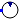

Type 3 wind machine from GE
Extends from Modelica.Icons.Package (Icon for standard packages).
| Name | Description |
|---|---|
| Electrical control models for type 3 wind machine | |
| Type 3 wind generator model | |
| Type 3 wind turbine model | |
|  GE_WT | Type 3 wind turbine machine from GE |
Type 3 wind turbine machine from GE
| Name | Description |
|---|---|
| _V0 | Terminal Voltage from Power Flow [1] |
| _Ang0 | Terminal Angle from Power Flow [rad] |
| _P0 | Active Power from Power Flow [W] |
| _Q0 | Reactive Power from Power Flow [var] |
| GEN_base | Base Power from the Electrical Generator [V.A] |
| WT_base | Base Power from the Turbine [V.A] |
| SYS_base | Base Power from the power system [V.A] |
| freq | Steady state Frequency of the power system [Hz] |
| poles | Number of pole pairs |
| Tp | Time Constant Pitch command [s] |
| Kpp | Pitch Control gain |
| Kip | Gain of integrator of Pitch Control |
| Kpc | Pitch Compensation gain |
| Kic | Gain of integrator of Pitch Compensation |
| pimax | Maximum pitch angle [rad] |
| pimin | minimum pitch angle [rad] |
| pirat | maximum variation rate of pitch angle [1/s] |
| pwmax | Maximal power taken from the wind [1] |
| pwmin | Minimal power taken from the wind [1] |
| pwrat | maximum variation rate of power taken from the wind [1/s] |
| Kptrq | Gain Torque Controller |
| Kitrq | Gain of integrator of Torque Controller |
| Tpc | Time Constant Torque controller [s] |
| KQi | Gain constant of first PI in DFIG electrical control model |
| KVi | Gain constant of second PI in DFIG electrical control model |
| xiqmax | Up saturation of second PI in DFIG electrical control model [1] |
| xiqmin | Down saturation of second PI in DFIG electrical control model [1] |
| Kpllp | |
| Xpp | [1] |
| qmax | [1] |
| qmin | [1] |
| nmass | Mono-mass or Two-mass model |
| Hg | Inertia 2 [s] |
| H | Inertia [s] |
| Ktg | Gain for 2 mass model |
| Dtg | Damping |
| Kl |
| Name | Description |
|---|---|
| pwPin1 | |
| Wind_Speed |